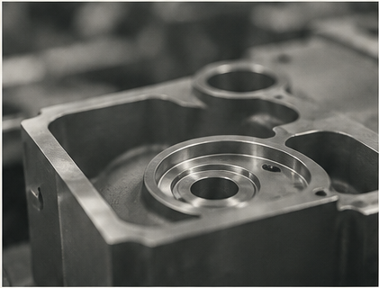

01
Manufacturing
Quality & Inspection
Automated visual inspection and defect detection, quality analytics and root cause analysis, and automation of nonconformance and inspection workflows.
We build, deploy, and operate intelligent systems that improve manufacturing quality, engineering productivity, and operational performance. From software automation to machine vision, we deliver the capabilities of an industrial AI team without the overhead of building one.
Get in touch ↗Automated visual inspection and defect detection, quality analytics and root cause analysis, and automation of nonconformance and inspection workflows.
AI-powered engineering assistants, automation of repetitive document-intensive workflows, and integration with existing engineering and manufacturing systems.
Production monitoring and operational analytics, with AI connected to industrial cameras, sensors, and edge computers to support manufacturing decisions.
Most manufacturers don't need to build an internal AI organization to benefit from AI. Valynce provides the expertise, technology, and ongoing operational support needed to turn AI into measurable improvements in quality, productivity, and cost.
Explore capabilities →
Find high-value opportunities with measurable operational impact.
Develop, integrate, and validate solutions in real manufacturing environments.
Monitor, maintain, and continuously improve deployed systems.
Work with your ERP, MES, QMS, PLM, and data infrastructure without replacing the systems that run your business.
Tell us where quality, engineering, or operations are losing time. We will help determine where AI can create measurable value.
Start a conversation ↗